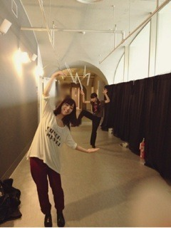

| 2012/12 29 Sat | 329回目*marika |
のおおおおお
やっぱしみなさんに心配かけて
しまってました

体調崩してはないから大丈夫よ！
元気です！
今日はオフだったので昼まで寝て
お布団干してバニラヨーグルト食べて
掃除して宿題してました。
*****HaPPy BirThDAy*****
いこまちゃん♡2012.12.29
いつもメンバーを引っ張ってくれて
ありがとう！
いつもありがとう！
生駒を見てると、
人に頼らず自分で頑張らないとな
って思います。
しゃんとしてる生駒、
本当にかっこいいです。
生駒とおふざけするの楽しい

この変態っ！ってくらい
触ってくるけどね笑

おめでとう

だいすきだよ！
今の髪型いっちゃん好みです。
またなでなでさせてください。←
**********
 メイクするとき
メイクするとき
一番気合いいれてるのはどこ(^o^)/？
 肌と唇。
最もliveで張り切るメンバーは？
それは私も含め...
肌と唇。
最もliveで張り切るメンバーは？
それは私も含め...
みんなや！

ディズニーキャラのなかで
何が一番好きですか？
ダンボとバンビと白雪姫。
中学と高校はセーラー？ブレザー？
ブレザーだよぉ。動きにくいの。
推し変してもいい？
...寂しいです。だいぶ。
また好きになって
もらえるように頑張る！
曲数増えてきてダンスの振り付け
忘れていったりしない？
うん。やっぱりライブ前は
やった振り付けもきっちりやるよ。
メンバー同士で教えあったりね！
宿題はもうすませたかな？
数学が終わらない～泣
服の着丈とかサイズ感気にします？
大事！
大き過ぎても着られてる感
出ちゃうからね。
そうじするとかはどこから始める？
目についたものから！
乃木詩のフリも結構揃ってたと
思わない？ステージ上から
見たらどんな感じなんだろう。
揃ってました

ライブでいつも感動します。
舞台から見てると
綺麗過ぎて鳥肌たつ！
同じ動きしてると一体感が出て
楽しいし嬉しいです^^
**********
リクエスト7
伊藤ちゃんずで遠近法
(ねねが大きく見えるように)

レッスン着だから脱力感満載だ。
タノシー

......

ではおやすみなさい
まりか
コメント(208)
2012/12/29 21:06